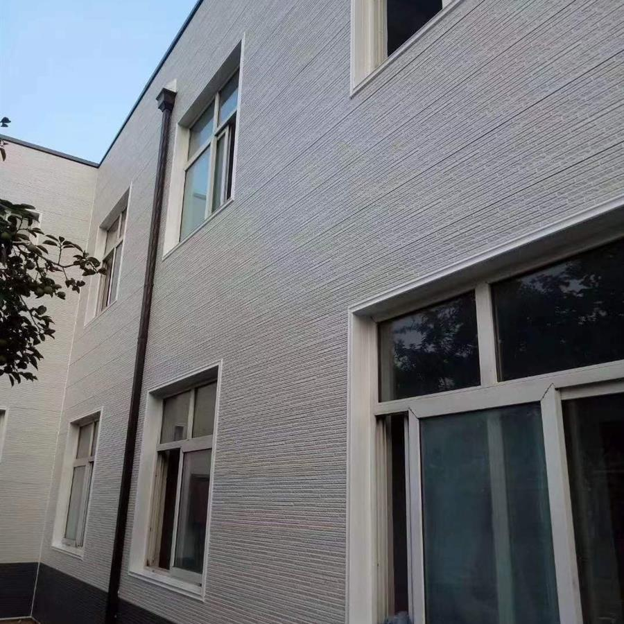
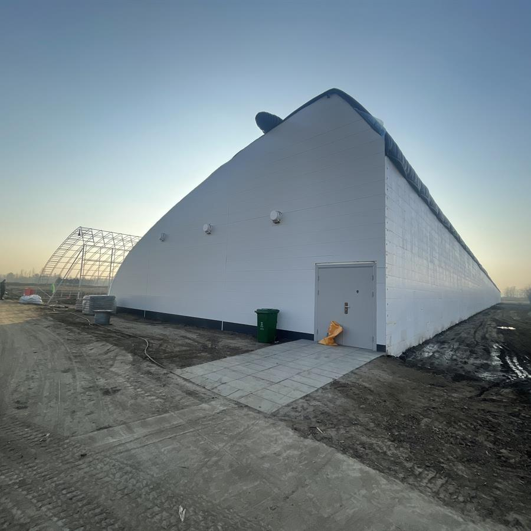
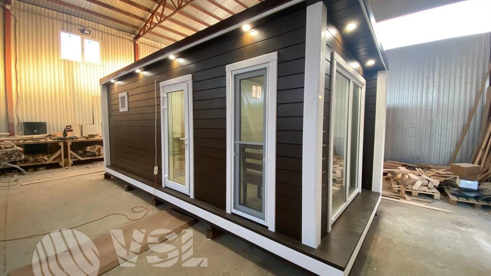

Heat transfer control
R-value, U-value, and conductivity require assembly-level interpretation.
Performance Engineering
Performance is interpreted through material properties, composite action, wind load path, thermal continuity, water management, fire caution, fixing, substrate, and project context.
The performance framework uses reference data carefully. It supports engineering discussion but does not invent certifications, code compliance, fire ratings, waterproof guarantees, or whole-wall values without test context.
R-value, U-value, and conductivity require assembly-level interpretation.
Wind pressure transfers through panel, interlock, fixing, substrate, and structure.
Fire references require test standard, sample, edge, and assembly context.
Density, bond strength, metal skin, PU core, and backing describe layer relationships.
Use this category as part of a complete exterior system review. Each topic should identify the controlled behavior, the workflow stage, the risk condition, and the verification point.
Define whether the page controls water, heat, load, geometry, surface protection, manufacturing consistency, or site workflow.
Locate the control point in design, production, loading, storage, cutting, installation, or inspection.
Identify joints, corners, openings, cut edges, fasteners, support spans, coatings, packaging, or substrate transitions.
Use drawings, diagrams, site photos, QC images, installation frames, loading records, or final inspection notes.
Practical Workflow
Move from material data to panel behavior to facade assembly and project requirements.
Identify source, units, test method, and bilingual differences where present.
Review thermal, water, wind, fire, and material pathways.
Focus on joints, fixings, trims, openings, substrate, and cavities.
Separate engineering references from formal compliance claims.
Material, panel, connection, facade, and project levels.
Show how pressure and heat transfer pass through the assembly.
Technical subpages for detail-level engineering logic, failure conditions, checkpoints, and evidence embedding.
This category should be read as part of the connected exterior system, not as an isolated topic.
Material data must be interpreted through composite layer and assembly behavior.
Control layers and load paths must be mapped before claims are made.
Future test context, diagrams, QC records, and project evidence support technical credibility.
Future diagrams, installation frames, QC images, and project details should validate this relationship.
Future evidence should document real system behavior. These slots are reserved for technical visuals, not decorative images.

DiagramSystem detail, control layer, sequencing, or load/water/thermal path drawing.

Field FrameInstallation, handling, storage, cutting, cleaning, or inspection photo frame.

QC RecordFactory, packaging, dimensional, surface, or loading verification image.
 Project Detail
Project DetailBuilt facade condition showing corner, opening, trim, drainage, or panel continuity.
Engineering documentation should describe how workflows break, where risk concentrates, and what must be checked before the next step proceeds.
Water control depends on overlap, drainage exits, flashing, drying paths, and sequencing. Do not block intended exits.
Joints, fasteners, trims, openings, cuts, and damaged cores can interrupt insulation continuity.
Metal filings must be removed from coated surfaces and cut edges before moisture exposure.
Wide pallet spacing or uneven supports can deform long panels under their own weight.
Reverse-lap sequencing can direct water behind the cladding instead of outward.
Verify the control point before moving to the next stage: seat, fix, close, drain, clean, inspect.
No. Values need test context and assembly interpretation.
No. Fire classification depends on standard, test specimen, and jurisdiction.
Panel rigidity, interlock, fixings, substrate, building height, and local wind pressure.
Performance is system behavior, not a copied specification table.